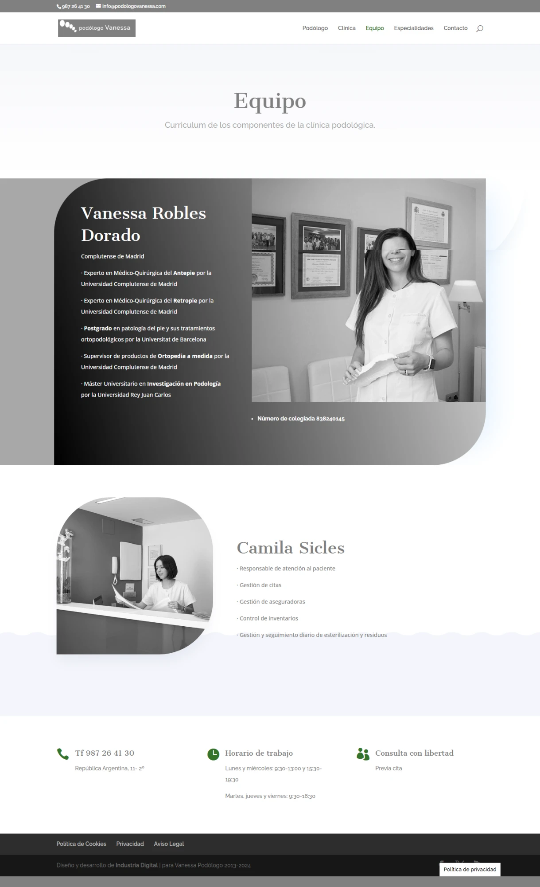
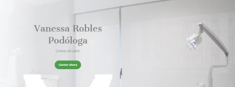
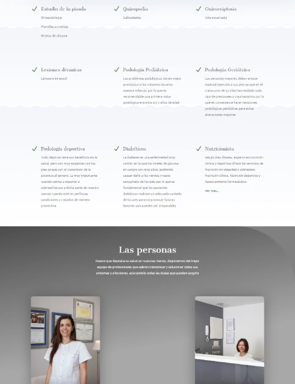

Vanessa Robles Dorado dirige desde 2003 una clínica con más de 20 años de trayectoria, formación verificable (Complutense, Retropié, postgrado en Barcelona, responsable de Ortopedia, colegiada nº 838240145) y una reputación real de 4,8/5 sobre 20 opiniones en Google. Tiene un enfoque poco común en el vertical: especialización explícita por etapas de vida (infantil, deportiva, diabética, geriátrica). El problema no es la falta de activos — es que varios de los más fuertes están enterrados: la formación solo aparece en la página Equipo, no en portada, donde el titular se limita a "Vanessa Robles, Podóloga"; y el catálogo de Especialidades mezcla, en una sola lista sin jerarquía, cuatro tratamientos técnicos y cuatro perfiles de paciente.

| Directora | Vanessa Robles Dorado — Graduada en Podología (Universidad Complutense de Madrid). Formación en Retropié, postgrado en Barcelona, responsable del área de Ortopedia, Máster en Investigación. Colegiada nº 838240145. |
|---|---|
| Equipo | Vanessa Robles Dorado (dirección) y Camila Sicles (recepción), según la página Equipo de podologovanessa.com — confirmado por captura de pantalla |
| Trayectoria | Desde 2003 — más de 20 años, según su propia ficha de Google |
| Reputación | 4,8/5 sobre 20 opiniones en Google Maps — confirmado directamente |
| Dirección | C/ República Argentina 11, 2º, 24006 León (centro) |
| Contacto | 987 26 41 30 · info@podologovanessa.com |
| Horario | Lunes y miércoles 09:30-13:00/15:30-19:30 · Martes, jueves y viernes 09:30-16:30 (jornada intensiva) |
| Especialización | Podología infantil (primera visita a los 4-5 años), geriátrica, deportiva y diabética — listada junto a los tratamientos técnicos en la página Especialidades, sin sección propia |
| Servicios técnicos | Estudio de la pisada (ortopodología, plantillas a medida, ortesis de silicona), quiropodia (callosidades), onicocriptosis (uña encarnada), lesiones dérmicas (lámpara de Wood) |
| Nutrición | Sergio Diez Álvarez — experto en nutrición clínica y deportiva, obesidad y sobrepeso, asesoramiento farmacéutico. Confirmado por captura de la portada real. ✅ |
| Navegación | Podólogo · Clínica · Equipo · Especialidades · Contacto |
Busco "podólogo diabético León" o "podólogo infantil León" — un tipo de búsqueda muy específica, distinta de "podólogo León" genérico.
Leo el catálogo de servicios — nueve tarjetas en una sola lista, mezclando tratamiento técnico (ortopodología, quiropodia) y perfil de paciente (infantil, diabético), sin agrupar. Tengo que leerlas todas para encontrar la mía.
Busco si hay algo específico para mi caso (diabetes, niño pequeño, deportista) — si lo encuentro con claridad, confío más que si tengo que deducirlo de un catálogo técnico general.
Decido en función de si veo mi situación concreta reflejada, no solo una lista de tratamientos con nombres técnicos.
Evidencia real (recorte de la portada, ampliado):

El titular real dice "Vanessa Robles, Podóloga — Clínica en León". Nada de la formación (Complutense, Retropié, Barcelona, Ortopedia, colegiada nº 838240145) aparece hasta la página Equipo, tres clics después. El dato existe y es muy sólido — el problema es dónde vive.
Un padre buscando la primera revisión de su hijo, o un paciente diabético que necesita cuidado especializado, casi nunca llega hasta la página Equipo antes de decidir si llama. Si la autoridad y la especialización solo viven ahí, se pierden en el primer vistazo.
Traer una versión corta de esa autoridad (colegiada, años de experiencia, especialidad en antepié/retropié) al titular de portada, junto al nombre.
Reduce el esfuerzo de interpretación del paciente y aumenta la sensación de "esto es justo para mí" en el primer vistazo, no en la tercera página.
Evidencia real (recorte del catálogo de la portada):

El catálogo muestra nueve tarjetas: Estudio de la pisada, Quiropodia, Onicocriptosis y Lesiones dérmicas (tratamientos técnicos) junto a Podología Pediátrica, Geriátrica, Deportiva y Diabéticos (perfiles de paciente), más Nutricionista (Sergio Diez Álvarez) — todas en una única lista, sin distinguir "qué tratamiento necesito" de "qué tipo de paciente soy".
Un padre que busca la primera revisión de su hijo de 4 años tiene que leer nueve tarjetas para encontrar la suya, en vez de reconocerla de inmediato. Lo mismo para un paciente diabético que necesita ver junto el cuidado del pie y la nutrición, y hoy las ve como dos tarjetas sueltas entre otras siete.
Separar visualmente el catálogo en dos grupos -- "Por tipo de paciente" (infantil, deportivo, diabético, mayor) y "Por tratamiento" (pisada, quiropodia, uña, piel) -- y enlazar la tarjeta de nutrición directamente desde Diabéticos, ya que clínicamente van juntos.
Convierte una lista plana de nueve ítems en un catálogo que cada paciente reconoce como propio en segundos, y refuerza el argumento de cuidado integral para el segmento diabético.
No proponemos crear nada nuevo — esto ya existe y ya funciona. El problema es que no está trabajando a su favor todo lo que podría.
| Área | Nota | Por qué |
|---|---|---|
| Diferenciación | 7/10 | Especialización real y explícita por etapas de vida, poco común en el resto del vertical auditado. |
| Autoridad | 7/10 | Formación académica verificable y detallada (Complutense, Retropié, Barcelona, Ortopedia, colegiada 838240145) — pero solo visible en la página Equipo, no en portada. |
| Reducción de incertidumbre | 5/10 | Horario flexible y visible, pero el catálogo de nueve servicios sin agrupar obliga a interpretar cuál corresponde a cada caso; precios sin confirmar. |
| Prueba social | 8/10 | 4,8/5 sobre 20 opiniones en Google Maps, confirmado directamente — cifra sólida, aunque de volumen moderado. |
| Confianza | 6/10 | Más de 20 años de trayectoria (desde 2003) combinados con formación académica verificable y reputación real en Google. |
| Claridad del mensaje | 3/10 | El titular de portada dice "Vanessa Robles, Podóloga — Clínica en León" — no comunica ninguna especialización real de las que sí existen. |
| Propuesta de valor | 3/10 | Mismo problema que el titular: no hay una frase que diferencie a la clínica de cualquier otro podólogo de León. |
| Conversión móvil | 6/10 | Diseño de una sola columna, botones grandes, fácil de usar en móvil — pero el catálogo de nueve tarjetas obliga a mucho scroll para encontrar la propia. |
| Facilidad para contactar | 7/10 | Barra de contacto (teléfono, dirección, email) repetida justo debajo de cada hero, consistente en las cinco páginas vistas. |
| Calidad de las CTA | 6/10 | Un único CTA ("Llamar ahora"), claro y consistente, pero sin alternativa como WhatsApp o reserva online para quien prefiere no llamar. |
| Jerarquía visual | 6/10 | Diseño cuidado (fotografía real, formas curvas, paleta consistente), pero el catálogo de especialidades pierde jerarquía al ser una lista plana de nueve tarjetas iguales. |
| Recorrido del usuario | 5/10 | Navegación clara (5 secciones), pero llegar del titular genérico a "esto es para mi caso" requiere leer todo el catálogo de Especialidades. |
Cada semana que la formación de Vanessa vive solo en la página Equipo, y que no está confirmado si la nutrición diabética sigue siendo real, algunos de esos padres, deportistas o pacientes diabéticos siguen comparando con otras clínicas de León. No hace falta cambiar el servicio — hace falta contarlo mejor y confirmar lo que ya no está claro ni para nosotros.
¿Hablamos 20 minutos esta semana para repasarlo juntos?
"Tenéis un enfoque distinto para cada etapa de la vida -- niños, deportistas, diabéticos, mayores -- con formación académica real detrás. Os dejamos un informe honesto sobre qué de eso no se ve a la primera, y qué dato conviene confirmar antes de usarlo en cualquier mensaje."
No vendemos diseño — ayudamos a que se convierta mejor lo que la clínica ya tiene.